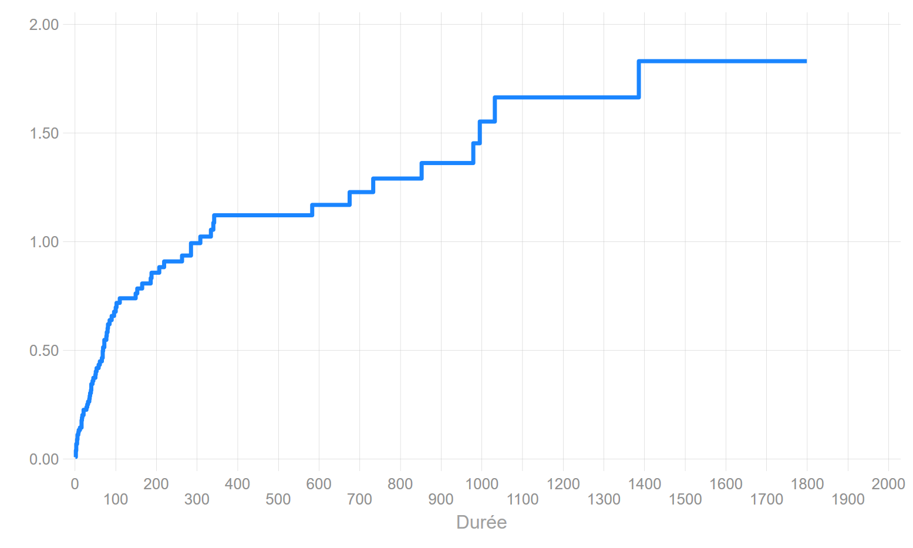

Méthodes non paramétrique
Les méthodes non paramétriques portent généralement sur l’analyse des fonctions de survie (séjour) ou sur celle des fonctions de répartitions, plus rarement sur les mesures d’incidence données par le risque cumulé.
Deux méthodes d’estimations sont proposées : la méthode dite actuarielle et la méthode dite de Kaplan & Meier. Ces deux méthodes sont adaptées à des mesures différentes de la durée : plutôt discrète pour la technique actuarielle et plutôt continue pour Kaplan-Meier (KM). Cela induit un traitement différent de la censure dans l’estimation. La seconde est de très très loin la plus diffusée, surement en raison des tests de comparaison qu’elle est en mesure de fournir.
1 Introduction
1.1 Les variables d’analyse
On a un échantillon aléatoire de \(n\) individus avec:
- Des indicateurs de fin d’épisode \(e_1,e_2,....,e_k\) avec \(e_i=0\) si censure à droite et \(e_i=1\) si évènement observé pendant la période d’observation.
- Des durées d’exposition au risque \(t_1,t_2,....,t_k\) jusqu’à l’évènement ou la censure.
- En théorie, il ne peut pas y avoir d’évènement en \(t=0\).
1.2 Calcul de la fonction de survie
Rappel: La fonction de survie donne la probabilité que l’évènement survienne après \(t_i\), soit \(S(t_i)=P(T>t_i)\).
Pour survivre en \(t_i\), il faut avoir survécu en \(t_{i-1}\), \(t_{i-2}\), …., \(t_{1}\).
La fonction de survie rapporte donc des probabilités conditionnelles: survivre en \(t_i\) conditionnellement au fait d’y avoir survécu avant. Il s’agit donc d’un produit de probabilités:
Soit \(d_i=\sum e_i\) le nombre d’évènements observé en \(t_i\) et \(r_i\) la population encore soumise au risque en \(i\). On peut mesurer l’intensité de l’évènement en \(t_i\) en calculant le quotient \(q(t_i)=\frac{d_i}{r_i}\). Si le temps est strictement continu on devrait toujours avoir \(q(t_i)=\frac{1}{r_i}\).
\(S(t_i) = (1 - \frac{d_i}{r_i})\times{S(t_{i-1})} = S(t_i) = (1 - q(t_i))\times{S(t_{i-1})}\). En remplaçant \(S(t_{i-1})\) par sa valeur: \(S(t_i) = (1 - \frac{d_i}{r_i})\times(1 - \frac{d_{i-1}}{r_{i-1}})\times{S(t_{i-2})}\).
En remplaçant toutes les expressions de la survie jusqu’en \(t_0\) (\(S(0)=1\)):
\[S(t_i)=\displaystyle \prod_{t_i\leq{k}} (1-q(t_i))\]
Application pour la suite de la formation
On va analyser le risque de décéder (la survie) de personnes souffrant d’une insuffisance cardiaque. Le début de l’exposition est leur inscription dans un registre d’attente pour une greffe du coeur.
Les covariables sont dans un premier temps toutes fixes: l’année (year) et l’âge (age) à l’entrée dans le registre, et le fait d’avoir été opéré pour un pontage aorto-coronarien avant l’inscription (surgery). Le début de l’exposition au risque est l’entrée dans le registre, la durée est mesurée en jour (stime). La variable évènement est le décès (died).
L’introduction d’une dimension dynamique, la greffe, sera donnée par les variable transplant et wait.
2 La méthode actuarielle
- Estimation sur des intervalles définies par l’utilisateur.
- Approche dite «continue», estimation en milieu d’intevalle.
- Méthode apropriée lorsque la durée est mesurée de manière discrète.
Echelle temporelle
La durée est divisée en \(J\) intervalles, en choisissant \(J\) points: \(t_0<t_1<...<t_J\) avec \(t_{J+1}=\infty\).
Calcul du Risk set
- A \(t_{min}=0\), \(n_0=n\) individus soumis au risque: \(r_0=n_0\).
- Le nombre d’exposé.e.s au risque sur un intervalle est calculé en soustrayant la moitié des cas censurés sur la longueur de l’intervalle: \(r_i=n_i- 0.5\times{c_i}\), avec \(n_i\) le nombre de personnes soumises au risque au début de l’intervalle et \(c_i\) le nombre d’observations censurées sur la longueur de l’intervalle. On suppose donc que les observations censurées \(c_i\) sont sorties de l’observation uniformément sur l’intervalle. Les cas censurés le sont en moyenne au millieu de l’intervalle.
Calcul de \(S(t_i)\)
On applique la méthode de la section précédente avec:
\[q(t_i)=\frac{d_i}{n_i - 0.5\times c_i}\]
Calcul de la durée médiane (ou autre quantiles)
Rappel: compte tenu des censures à droite, le dernier intervalle étant ouvert, il n’est pas conseillé de calculer des durées moyennes. On préfère utiliser la médiane ou tout autre quantile lorsqu’ils sont définissables.
*Définition**: il s’agit de la durée telle que \(S(t_i)=0.5\).
Calcul: Comme on applique une méthode continue et monotone à l’intérieur dintervalles, on ne peut pas calculer directement un point de coupure qui correspond à 50% de survivants. On doit donc trouver ce point par interpolation linéaire dans l’intervalle\([t_i;t_{i+1}[\) avec \(S(t_{i+1})\leq0.5\) et \(S(t_{i})>0.5\).
Logiciels
- SAS: incluse dans
proc lifetest. - Stata: commande
ltable. Voir la commande externeqlt(MT) qui calcule les durées médianes (+ autres quartiles) et qui cale la définition des intervalles avec celle de SAS. - R: une fonction programmée par un utilisateur (package
discSurv=> fonctionlifeTable), mais pas convaincante car pas d’estimation sur les quantiles, et estimation avec des intervalles toujours fixés à \(dt=1\). D’un intérêt très limité.
- Python: à l’heure actuelle, aucune fonction à ma connaissance.
Exemple
Beg. Std.
Interval Total Deaths Lost Survival Error [95% Conf. Int.]
-------------------------------------------------------------------------------
0 10 103 13 0 0.8738 0.0327 0.7926 0.9247
10 20 90 6 1 0.8152 0.0383 0.7257 0.8779
20 30 83 3 0 0.7857 0.0405 0.6931 0.8533
30 40 80 6 2 0.7261 0.0441 0.6284 0.8020
40 50 72 4 0 0.6857 0.0461 0.5857 0.7664
50 60 68 4 0 0.6454 0.0476 0.5439 0.7299
60 70 64 5 0 0.5950 0.0489 0.4926 0.6834
70 80 59 4 0 0.5546 0.0496 0.4523 0.6454
80 90 55 3 0 0.5244 0.0499 0.4225 0.6165
90 100 52 2 0 0.5042 0.0499 0.4029 0.5971
100 110 50 2 1 0.4838 0.0500 0.3831 0.5773
110 120 47 1 0 0.4735 0.0499 0.3732 0.5673
130 140 46 0 1 0.4735 0.0499 0.3732 0.5673
140 150 45 1 0 0.4630 0.0499 0.3631 0.5570
150 160 44 1 0 0.4525 0.0499 0.3530 0.5467
160 170 43 1 0 0.4420 0.0498 0.3429 0.5364
180 190 42 2 1 0.4207 0.0496 0.3227 0.5154
200 210 39 1 0 0.4099 0.0495 0.3125 0.5047
210 220 38 1 0 0.3991 0.0494 0.3024 0.4939
260 270 37 1 1 0.3882 0.0492 0.2921 0.4830
280 290 35 2 0 0.3660 0.0489 0.2714 0.4608
300 310 33 1 0 0.3549 0.0486 0.2612 0.4496
330 340 32 1 0 0.3438 0.0483 0.2510 0.4383
340 350 31 2 1 0.3213 0.0477 0.2305 0.4153
370 380 28 0 1 0.3213 0.0477 0.2305 0.4153
390 400 27 0 1 0.3213 0.0477 0.2305 0.4153
420 430 26 0 1 0.3213 0.0477 0.2305 0.4153
440 450 25 0 1 0.3213 0.0477 0.2305 0.4153
480 490 24 0 1 0.3213 0.0477 0.2305 0.4153
510 520 23 0 1 0.3213 0.0477 0.2305 0.4153
540 550 22 0 1 0.3213 0.0477 0.2305 0.4153
580 590 21 1 0 0.3060 0.0478 0.2156 0.4008
590 600 20 0 1 0.3060 0.0478 0.2156 0.4008
620 630 19 0 1 0.3060 0.0478 0.2156 0.4008
670 680 18 1 1 0.2885 0.0482 0.1983 0.3847
730 740 16 1 0 0.2705 0.0484 0.1808 0.3680
840 850 15 0 1 0.2705 0.0484 0.1808 0.3680
850 860 14 1 0 0.2511 0.0487 0.1622 0.3501
910 920 13 0 1 0.2511 0.0487 0.1622 0.3501
940 950 12 0 1 0.2511 0.0487 0.1622 0.3501
970 980 11 1 0 0.2283 0.0493 0.1398 0.3299
990 1000 10 1 0 0.2055 0.0494 0.1187 0.3088
1030 1040 9 1 0 0.1826 0.0489 0.0988 0.2869
1140 1150 8 0 1 0.1826 0.0489 0.0988 0.2869
1320 1330 7 0 1 0.1826 0.0489 0.0988 0.2869
1380 1390 6 1 0 0.1522 0.0493 0.0715 0.2609
1400 1410 5 0 2 0.1522 0.0493 0.0715 0.2609
1570 1580 3 0 1 0.1522 0.0493 0.0715 0.2609
1580 1590 2 0 1 0.1522 0.0493 0.0715 0.2609
1790 1800 1 0 1 0.1522 0.0493 0.0715 0.2609
-------------------------------------------------------------------------------
Durée pour differents quantiles de la fonction de survie
Définition des bornes Sas-lifetest
S(t)=0.90: t= 7.923
S(t)=0.75: t= 35.989
S(t)=0.50: t= 102.068
S(t)=0.25: t= 913.968
S(t)=0.10: t= .
102 jours après leur inscription dans le registre d’attente pour une greffe, 50% des malades sont toujours en vie. Au bout de 914 jours, 75% des personnes sont décédées.
3 La méthode de Kaplan-Meier
- L’approche qui exploite toute l’information disponible est celle dite de Kaplan-Meier (KM).
- Il y a autant d’intervalles que de durées où l’on observe au moins un évènement.
- Au lieu d’utiliser des intervalles prédéterminés, l’estimateur KM va définir un intervalle entre chaque évènement enregistré.
- La fonction de survie estimée par la méthode KM est une fonction en escalier (stairstep), d’où une méthode dite “discrète”.
- Pour chaque intervalle, on compte le nombe d’évènements et le nombre de censures.
- Méthode adaptée pour une mesure de la durée de type continue.
Définition du Risk Set (\(r_i\))
S’il y a à la fois des évènements et des censures à une durée \(t_i\), les observations censurées sont considérées comme exposées au risque à ce moment, comme si elles étaient censurées très rapidement après. C’est la principale caractéristique de cette méthode, nommée également l’estimateur « product-limit »
\[r_i=r_{i-1}-d_{i-1}-c_{i-1}\]
Calcul de \(q_i\)
On applique la méthode de la section précédente avec:
\[q_i=\frac{d_i}{r_{i-1}-d_{i-1}-c_{i-1}}\]
Récupération de la médiane
Il n’y a pas de méthode pour calculer directement la durée médiane (ou tout autre quantile).
On va prendre la valeur de la durée qui se situe juste “en dessous” de 50% de survivant.e.s. Elle est donc définie tel que \(S(t)\leq0.5\). Pas de formule savante pour obtenir ce résultat, c’est une convention. Attention, il n’est pas impossible que le % de survivant.e.s soit bien en deçà de 50% pour obtenir cette durée médiane.
Exemple
On reprend l’exemple précédent.
Time Total Fail Lost Function Error [95% Conf. Int.]
-------------------------------------------------------------------------------
1 103 1 0 0.9903 0.0097 0.9331 0.9986
2 102 3 0 0.9612 0.0190 0.8998 0.9852
3 99 3 0 0.9320 0.0248 0.8627 0.9670
5 96 2 0 0.9126 0.0278 0.8388 0.9535
6 94 2 0 0.8932 0.0304 0.8155 0.9394
8 92 1 0 0.8835 0.0316 0.8040 0.9321
9 91 1 0 0.8738 0.0327 0.7926 0.9247
11 90 0 1 0.8738 0.0327 0.7926 0.9247
12 89 1 0 0.8640 0.0338 0.7811 0.9171
16 88 3 0 0.8345 0.0367 0.7474 0.8937
17 85 1 0 0.8247 0.0375 0.7363 0.8857
18 84 1 0 0.8149 0.0383 0.7253 0.8777
21 83 2 0 0.7952 0.0399 0.7034 0.8614
28 81 1 0 0.7854 0.0406 0.6926 0.8531
30 80 1 0 0.7756 0.0412 0.6819 0.8448
31 79 0 1 0.7756 0.0412 0.6819 0.8448
32 78 1 0 0.7657 0.0419 0.6710 0.8363
35 77 1 0 0.7557 0.0425 0.6603 0.8278
36 76 1 0 0.7458 0.0431 0.6495 0.8192
37 75 1 0 0.7358 0.0436 0.6388 0.8106
39 74 1 1 0.7259 0.0442 0.6282 0.8019
40 72 2 0 0.7057 0.0452 0.6068 0.7842
43 70 1 0 0.6956 0.0457 0.5961 0.7752
45 69 1 0 0.6856 0.0461 0.5855 0.7662
50 68 1 0 0.6755 0.0465 0.5750 0.7572
51 67 1 0 0.6654 0.0469 0.5645 0.7481
53 66 1 0 0.6553 0.0472 0.5541 0.7390
58 65 1 0 0.6452 0.0476 0.5437 0.7298
61 64 1 0 0.6352 0.0479 0.5333 0.7206
66 63 1 0 0.6251 0.0482 0.5230 0.7113
68 62 2 0 0.6049 0.0487 0.5026 0.6926
69 60 1 0 0.5948 0.0489 0.4924 0.6832
72 59 2 0 0.5747 0.0493 0.4722 0.6643
77 57 1 0 0.5646 0.0494 0.4621 0.6548
78 56 1 0 0.5545 0.0496 0.4521 0.6453
80 55 1 0 0.5444 0.0497 0.4422 0.6357
81 54 1 0 0.5343 0.0498 0.4323 0.6261
85 53 1 0 0.5243 0.0499 0.4224 0.6164
90 52 1 0 0.5142 0.0499 0.4125 0.6067
96 51 1 0 0.5041 0.0499 0.4027 0.5969
100 50 1 0 0.4940 0.0499 0.3930 0.5872
102 49 1 0 0.4839 0.0499 0.3833 0.5773
109 48 0 1 0.4839 0.0499 0.3833 0.5773
110 47 1 0 0.4736 0.0499 0.3733 0.5673
131 46 0 1 0.4736 0.0499 0.3733 0.5673
149 45 1 0 0.4631 0.0499 0.3632 0.5571
153 44 1 0 0.4526 0.0499 0.3531 0.5468
165 43 1 0 0.4421 0.0498 0.3430 0.5364
180 42 0 1 0.4421 0.0498 0.3430 0.5364
186 41 1 0 0.4313 0.0497 0.3327 0.5258
188 40 1 0 0.4205 0.0497 0.3225 0.5152
207 39 1 0 0.4097 0.0495 0.3123 0.5045
219 38 1 0 0.3989 0.0494 0.3022 0.4938
263 37 1 0 0.3881 0.0492 0.2921 0.4830
265 36 0 1 0.3881 0.0492 0.2921 0.4830
285 35 2 0 0.3660 0.0488 0.2714 0.4608
308 33 1 0 0.3549 0.0486 0.2612 0.4496
334 32 1 0 0.3438 0.0483 0.2510 0.4383
340 31 1 1 0.3327 0.0480 0.2409 0.4270
342 29 1 0 0.3212 0.0477 0.2305 0.4153
370 28 0 1 0.3212 0.0477 0.2305 0.4153
397 27 0 1 0.3212 0.0477 0.2305 0.4153
427 26 0 1 0.3212 0.0477 0.2305 0.4153
445 25 0 1 0.3212 0.0477 0.2305 0.4153
482 24 0 1 0.3212 0.0477 0.2305 0.4153
515 23 0 1 0.3212 0.0477 0.2305 0.4153
545 22 0 1 0.3212 0.0477 0.2305 0.4153
583 21 1 0 0.3059 0.0478 0.2156 0.4008
596 20 0 1 0.3059 0.0478 0.2156 0.4008
620 19 0 1 0.3059 0.0478 0.2156 0.4008
670 18 0 1 0.3059 0.0478 0.2156 0.4008
675 17 1 0 0.2879 0.0483 0.1976 0.3844
733 16 1 0 0.2699 0.0485 0.1802 0.3676
841 15 0 1 0.2699 0.0485 0.1802 0.3676
852 14 1 0 0.2507 0.0487 0.1616 0.3497
915 13 0 1 0.2507 0.0487 0.1616 0.3497
941 12 0 1 0.2507 0.0487 0.1616 0.3497
979 11 1 0 0.2279 0.0493 0.1394 0.3295
995 10 1 0 0.2051 0.0494 0.1183 0.3085
1032 9 1 0 0.1823 0.0489 0.0985 0.2865
1141 8 0 1 0.1823 0.0489 0.0985 0.2865
1321 7 0 1 0.1823 0.0489 0.0985 0.2865
1386 6 1 0 0.1519 0.0493 0.0713 0.2606
1400 5 0 1 0.1519 0.0493 0.0713 0.2606
1407 4 0 1 0.1519 0.0493 0.0713 0.2606
1571 3 0 1 0.1519 0.0493 0.0713 0.2606
1586 2 0 1 0.1519 0.0493 0.0713 0.2606
1799 1 0 1 0.1519 0.0493 0.0713 0.2606
-------------------------------------------------------------------------------Durée médiane: \(t=100\) (correspond à \(S(t)=0.4940\)).

- SAS : l’estimation de Kaplan-Meier est affichée par défaut par la
proc lifetest. Attention : le tableau donné par SAS est particulièrement pénible à lire voire illisible, en particulier lorsque le nombre de censures est élevé, une ligne est ajoutée pour chaque observation censurée. Je conseille de ne pas afficher cette partie de l’output (voir section SAS). On récupère pour le reste de l’output les valeurs de la durée pour S(t) =(.75,.5,.25) ainsi que le graphique, ce qui est suffisant. - Stata : en mode survie (
stset), le tableau des estimateurs est donné par la commandests listet le graphique parsts graph. - R : les estimateurs sont donnés par la fonction
survfitde la librairiesurvival. - Python: les resultats sont donnés dans la librairie
lifelinepar des fonctions dont le nom est tout bonnement interminable. Je conseille plutôt l’utilisation de la librairiestatmodels(se reporter à la section dédiée à Python).
Exercice
Calculer la fonction de survie \(S\) avec un tableur.
----------------------------------------------------------------------
t | d c r q S
----------+-----------------------------------------------------------
0 | 0 0
6 | 1 0
19 | 1 0
32 | 1 0
42 | 2 0
43 | 0 1
94 | 1 0
126 | 0 2
207 | 1 0
227 | 0 2
253 | 1 0
255 | 0 1
----------------------------------------------------------------------Quantités associées
Le risque cumulé: estimateur de Nelson AAlen
Il est simplément égal à: \[H(t)=\sum_{t_i\leq k}q(t_i)\]

Le risque instantané
Nécessite l’estimateur de Nelson-Aalen. Le risque est obtenu en lissant les différences - toujours positive - entre \(H(t)\) par la méthode dite du kernel. Elle permet d’obtenir une fonction continue avec la durée (paramétrables sur les largeurs des fenêtres de lissage). D’autres méthodes de lissage sont maintenant possibles, et de plus en plus utilisées, en particulier celles utilisant des splines restreintes (paramétrable sur un nombre de degré de liberté – nœuds-).

4 Tester l’égalité des courbes de survie (méthode KM)
Les tests d’égalités des fonctions de survie entre différentes valeurs d’une covariable sont calculés à partir de la méthode de Kaplan Meier.
L’utilisation du test correspond à la nécessité de déterminer si une même distribution gouverne les évènements observés dans les différentes strates ou les différents échantillons.
Attention: pas de test possibles sur des variables continues. Prévoir des regroupements pour les transformer en variable ordinale.
Deux méthodes sont utilisées:
- La plus ancienne et la plus diffusée: test sur les rangs (tests dits du log-rank).
- Plus récente et moins difusée: comparaison des RMST (Restricted Mean of Survival Time).
4.1 Tests du log-rank
Il s’agit d’une série de tests qui répondent à la même logique, la seule différence réside dans le poids accordé au début ou à la fin de la période d’observation. Par ailleurs ces différents tests sont plus ou moins sensibles à la distribution des censures à droites entre les sous échantillons.
Ces tests entrent dans le cadre des tests du Khi2, même si formellement ils relèvent des techniques dites de rang.
Il s’agira donc de comparer des effectifs observés à des effectifs espérés à chaque temps d’évènement. La principale différence réside dans le calcul de la variance de la statistique du test qui, ici, suit une loi hypergéométrique.
Principe de calcul des effectifs - évènements - observés et espérés pour deux groupes
- Effectifs observés en \(t_i\): \(o_{i1}\) et \(o_{i2}\) sont égaux à \(d_{i1}\) et \(d_{i2}\), et leur somme pour tous les temps d’évènement à \(O_1\) et \(O_2\).
- Effectifs expérés (hypothèse nulle \(H_0\)): comme pour une statistique du \(\chi^2\) on se base sur les marges, avec le risque set (\(R_i\)) en \(t_i\) pour dénombrer les effectifs, soit \(e_{i1}=R_{i1}\times\frac{d_i}{R_i}\) et \(e_{i2}=R_{i2}\times\frac{d_2}{R_2}\). Leur somme pour tous les temps d’évènement est égale à \(E_1\) et \(E_2\). Le principe de calcul des effectifs observés reposent donc sur l’hypothèse d’un rapport des risques toujours égal à 1 au cours du temps (hypothèse fondamentale de risques proportionnels).
- Statistique du log-rank: \((O_1 - E_1) = -(O_2 - E_2)\).
- Statistique de test: sous \(H_0\), \(\frac{(O_1 - E_1)^2}{\sum{v_i}}\), avec \(v_i\) la variance de \((o_{i1} - e_{i2})\), suis un \(\chi^2(1)\).
Si on teste la différence de \(g\) fonctions de survie, la statistique de test suis un \(\chi^2(g-1)\).
Les principaux tests de type log-rank
Le principe de construction des effectifs observés et espérés reste le même dans chaque test, les différences résident dans les pondérations (\(w_i\)) qui prennent en compte, de manière différente, la taille de la population soumise au risque à chaque durée où au moins un évènement est observé.
- Test du log-rank: \(w_i=1\)
Il accorde le même poids à toutes les durées d’évènement. C’est le test standard, le plus utilisé. - Test de Wilconxon-Breslow-Grehan: \(w_i=R_i\)
Les écarts entre effectifs observés et espérés sont pondérés par la population soumise à risque en \(t_i\). Le test accorde plus de poids au début de la période analysée, et il est sensible aux différences de distributions entre les strates des observations censurées. - Test de Tarone-Ware: \(w_i=\sqrt{R_i}\)
Variante du test précédent, il atténue le poids accordé aux évènements au début de la période d’observation. Il est par ailleurs moins sensible au problème de la distribution des censures entre les strates. - Test de Peto-Peto : \(w_i=S_i\)
La pondération est une variante de la fonction de survie KM (avec \(R_i=R_i+1\)). Le test n’est pas sensible au problème de distribution des censures. - Test de Fleming-Harington: \(w_i=(S_i)^p\times(1-S_i)^{q}\) avec \(0\leq{p}\leq{1}\) Il permet de paramétrer le poids accordé au début où à la fin de temps d’observation. Si \(p=q=0\) on retrouve le test du log-rank.
Exemple On compare ici l’effet du pontage sur le risque de décéder depuis l’inscription dans le registre de greffe. 
Log-rank test for equality of survivor functions
| Events Events
surgery | observed expected
--------+-------------------------
0 | 69 60.34
1 | 6 14.66
--------+-------------------------
Total | 75 75.00
chi2(1) = 6.59
Pr>chi2 = 0.0103
Wilcoxon (Breslow) test for equality of survivor functions
| Events Events Sum of
surgery | observed expected ranks
--------+--------------------------------------
0 | 69 60.34 623
1 | 6 14.66 -623
--------+--------------------------------------
Total | 75 75.00 0
chi2(1) = 8.99
Pr>chi2 = 0.0027
Tarone-Ware test for equality of survivor functions
| Events Events Sum of
surgery | observed expected ranks
--------+--------------------------------------
0 | 69 60.34 73.111827
1 | 6 14.66 -73.111827
--------+--------------------------------------
Total | 75 75.00 0
chi2(1) = 8.46
Pr>chi2 = 0.0036
Peto-Peto test for equality of survivor functions
| Events Events Sum of
surgery | observed expected ranks
--------+--------------------------------------
0 | 69 60.34 6.0529913
1 | 6 14.66 -6.0529913
--------+--------------------------------------
Total | 75 75.00 0
chi2(1) = 8.66
Pr>chi2 = 0.0033Les résultats font apparaître, que l’opération permet d’allonger la durée de survie des personnes.
Logiciels
- Sas: Le test non pondéré et la version Wilcoxon sont données avec l’option
stratade laproc lifetest. Attention : ne jamais utiliser la version LR Test qui est biaisée. Pour obtenir d’autres versions du test du log-rank, on ajoute/test=allà l’optionstrata. Stata: on utilise la commande sts test avec le nom de la version du test si on ne souhaite pas récupérer toutes les variantes. - R: on utilise la fonction
survdiffde la librairiesurvival. Le résultat du test de Peto-Peto est affiché par défaut (rho=1). Si on souhaite utiliser le test non pondéré, on ajoute l’optionrho=0. Pour obtenir le résultat d’un test multiple corrigé (plus d’un degré de liberté), on peut utiliser la fonctionpairwise_survdiffde la librairiesurvminer. - Python: Avec la librairie lifelines, on utilise la fonction logrank_test. Quatre variantes sont disponibles (Wilcoxon, Tarone-Ware, Peto-Peto et Fleming-Harrigton). On peut également utiliser la fonction duration.survdiff de statmodels (non pondéré, Wilcoxon - appelé ici Breslow- et Tarone-Ware).
En pratique/remarques:
- Les tests du log-rank sont sensibles à l’hypothèse de risques proportionnels (voir modèle semi-paramétrique de Cox). En pratique si des courbes de séjours se croisent, il est déconseillé de les utiliser. Cela ne signifie pas que si les courbes ne se croisent pas, l’hypothèse de proportionnalité des risques est respectée : des rapports de risque peuvent au cours du temps s’accentuer, se réduire ou le cas échant s’inverser (typique d’un croisement).
- Effectuer un test global (multiple/omnibus) sur un nombre important de groupes (ou >2) peut rendre le test très facilement significatif. Il peut être intéressant de tester des courbes deux à deux (idem qu’une régression avec covariable discrète), en conservant un seul degré de liberté. Des méthodes de correction du test multiple sont possibles.
4.2 Comparaison des RMST
RMST: Restricted Mean of Survival Time
La comparaison des RMST est une alternative pertinente aux tests du log-rank car elle ne repose pas sur des hypothèses contraignantes (proportionnalité des risques, distribution des censures), et permet une lecture vivante basée sur des espérances de séjour et non sur la lecture d’une simple p-value traduisant l’homogénéité ou non des fonctions de séjour. Par ailleurs les comparaisons sont souples, on peut choisir un ou plusieurs points d’horizon pour alimenter l’analyse.
Principe
- L’aire sous la fonction de survie représente la durée moyenne d’attente de l’évènement, soit l’espérance de survie à l’évènement. On est très proche d’une mesure en analyse démographique type « espérance de vie partielle ».
- En présence de censure à droite, il faut borner la durée maximale \(t^*<\infty\). L’espérance de survie s’interprète donc sur un horizon fini.
- \(RMST =\int_0^{t^*}S(t)dt\).
- On peut facilement comparer les RMST de deux groupes, en termes de différence ou de ratio.
- Par défaut on définit généralement \(t*\) à partir le temps du dernier évènement observé. Il est néanmoins possible de calculer le RMST sur des intervalles plus court, ce qui lui permet une véritable souplesse au niveau de l’analyse.
Logiciels
SAS : disponible depuis la version 15.1 de SAS/Stat (fin 2018). Les estimations et le résultat du test de comparaison sont récupérables très simplement dans une
proc lifetest. Bien que sortie tardivement par rapport aux autres applications standards, les résultats sont particulièrement complets.Stata: commande externe **
strmst2*. La plus ancienne fonction proposée par les logiciels. Au final plus limitée que la solution Sas. J’ai programmé une commande,diffrmst, qui représente graphiquement les estimations des Rmst pour chaque temps d’évènement, leurs différences et les p-value issues des comparaisons.
R : librairie SurvRm2. Programmée par les mêmes personnes que la commande Stata, la fonction proposée n’est pas très souple.
Python : estimation avec une fonction de la librairie lifelines. Pas de test de comparaison.
Restricted Mean Survival Time (RMST) by arm
-----------------------------------------------------------
Group | Estimate Std. Err. [95% Conf. Interval]
---------+-------------------------------------------------
arm 1 | 734.758 133.478 473.145 996.370
arm 0 | 310.169 43.158 225.581 394.757
-----------------------------------------------------------
Between-group contrast (arm 1 versus arm 0)
------------------------------------------------------------------------
Contrast | Estimate [95% Conf. Interval] P>|z|
---------------------+--------------------------------------------------
RMST (arm 1 - arm 0) | 424.589 149.641 699.537 0.002
RMST (arm 1 / arm 0) | 2.369 1.513 3.710 0.000
------------------------------------------------------------------------Ici \(t^*\) est égal à 995 jours, soit la durée qui correspond au dernier décès observé lorsqu’une personne a été opérée pour un pontage (surgery=1).
Sur un horizon de 995 jours, ces individus peuvent espérer vivre 735 jours en moyenne, contre 310 jours pour les autres. La durée moyenne de survie est donc deux fois plus importante pour les personnes opérées d’un pontage (rapport des Rmst = 2.3 ), soit une différence de 424 jours.
Rmst et différences de Rmst à tous les points d’évènement jusqu’à \(tmax\)
+--------------------------------------------------------------------------+
| _time _rmst1 _rmst0 _diff _l _u _p |
|--------------------------------------------------------------------------|
| 1 1 1 0 0 0 . |
| 2 2 1.989011 .010989 .010989 .010989 . |
| 3 3 2.945055 .0549451 -.0196757 .1295658 .1489731 |
| 5 5 4.791209 .2087912 .0256584 .3919241 .0254456 |
| 5.1 5.1 4.882418 .2175824 .0240373 .4111275 .0275679 |
|--------------------------------------------------------------------------|
| 6 6 5.693407 .3065934 .0643487 .5488381 .0131162 |
| 8 8 7.451648 .5483516 .1860869 .9106163 .0030096 |
| 9 9 8.31978 .6802198 .2523926 1.108047 .0018318 |
| 11 11 10.03407 .965934 .4072903 1.524578 .0007017 |
| 12 12 10.89121 1.108791 .4836155 1.733967 .0005087 |
|--------------------------------------------------------------------------|
| 16 16 14.27525 1.724747 .8259398 2.623554 .0001692 |
| 17 17 15.08787 1.912131 .9277063 2.896555 .0001407 |
| 18 18 15.88935 2.110646 1.05301 3.168283 .0000918 |
| 21 21 18.26041 2.739589 1.458002 4.021176 .0000279 |
| 28 28 23.63703 4.362966 2.526501 6.199431 3.22e-06 |
|--------------------------------------------------------------------------|
| 30 30 25.15095 4.849051 2.842812 6.85529 2.17e-06 |
| 31 31 25.89677 5.103226 3.014868 7.191583 1.67e-06 |
| 32 32 26.6426 5.3574 3.186886 7.527915 1.31e-06 |
| 35 35 28.84618 6.153824 3.736433 8.571216 6.06e-07 |
| 36 36 29.5694 6.4306 3.929635 8.931564 4.67e-07 |
|--------------------------------------------------------------------------|
| 37 37 30.28132 6.718675 4.135427 9.301923 3.44e-07 |
| 39 39 31.68257 7.317427 4.569757 10.0651 1.79e-07 |
| 40 40 32.37189 7.628103 4.797789 10.45842 1.28e-07 |
| 43 43 34.37207 8.627934 5.552385 11.70349 3.83e-08 |
| 45 45 35.68291 9.31709 6.07508 12.5591 1.77e-08 |
|--------------------------------------------------------------------------|
| 50 50 38.90352 11.09648 7.431942 14.76102 2.94e-09 |
| 51 51 39.53634 11.46366 7.711818 15.2155 2.12e-09 |
| 53 53 40.77938 12.22061 8.298259 16.14297 1.02e-09 |
| 58 58 43.83049 14.16951 9.81571 18.52331 1.79e-10 |
| 61 61 45.62725 15.37275 10.75502 19.99047 6.81e-11 |
|--------------------------------------------------------------------------|
| 66 66 48.56535 17.43465 12.37503 22.49426 1.44e-11 |
| 68 68 49.71799 18.28201 13.04371 23.5203 7.90e-12 |
| 69 69 50.27171 18.72829 13.40325 24.05333 5.45e-12 |
| 72 72 51.89897 20.10103 14.51838 25.68369 1.70e-12 |
| 77 77 54.49805 22.50194 16.49285 28.51104 2.14e-13 |
|--------------------------------------------------------------------------|
| 78 78 55.00657 22.99343 16.89797 29.08889 1.43e-13 |
| 80 80 56.00101 23.99899 17.73478 30.26321 5.97e-14 |
| 81 81 56.48692 24.51307 18.16526 30.86089 3.77e-14 |
| 85 85 58.38539 26.61461 19.93458 33.29464 5.77e-15 |
| 90 90 60.70197 29.29803 22.1984 36.39766 6.66e-16 |
|--------------------------------------------------------------------------|
| 96 96 63.41406 32.58594 24.97681 40.19506 0 |
| 100 100 65.17693 34.82308 26.87198 42.77418 0 |
| 102 102 66.03575 35.96425 27.84368 44.08482 0 |
| 109 109 68.96255 40.03745 31.32724 48.74766 0 |
| 110 110 69.38067 40.61933 31.82339 49.41528 0 |
|--------------------------------------------------------------------------|
| 131 131 77.91717 53.08283 42.46146 63.7042 0 |
| 149 149 85.23417 63.76583 51.49939 76.03227 0 |
| 153 153 86.81235 66.18765 53.54893 78.82638 0 |
| 165 165 91.4034 73.5966 59.87845 87.31474 0 |
| 180 178.6364 97.14223 81.49413 51.34782 111.6404 1.17e-07 |
|--------------------------------------------------------------------------|
| 186 184.0909 99.43776 84.65315 53.34505 115.9613 1.16e-07 |
| 188 185.7273 100.2029 85.52434 53.56977 117.4789 1.56e-07 |
| 207 201.2727 107.2376 94.0351 58.18815 129.8821 2.73e-07 |
| 219 211.0909 111.5325 99.55843 61.16676 137.9501 3.72e-07 |
| 263 247.0909 126.7373 120.3536 72.25138 168.4559 9.40e-07 |
|--------------------------------------------------------------------------|
| 265 248.7273 127.4037 121.3235 72.75741 169.8897 9.77e-07 |
| 285 265.0909 134.0682 131.0227 77.89536 184.1501 1.34e-06 |
| 308 283.9091 141.1427 142.7664 84.36629 201.1664 1.66e-06 |
| 334 305.1818 148.8068 156.375 91.96277 220.7872 1.95e-06 |
| 340 310.0909 150.4986 159.5923 93.78695 225.3977 2.00e-06 |
|--------------------------------------------------------------------------|
| 342 311.7273 151.0369 160.6904 94.42397 226.9568 2.01e-06 |
| 370 332.0909 158.5728 173.5181 93.67896 253.3572 .0000205 |
| 397 351.7273 165.8396 185.8876 98.91358 272.8617 .000028 |
| 427 373.5454 173.9138 199.6316 104.6545 294.6087 .0000379 |
| 445 386.6364 178.7584 207.878 108.0686 307.6874 .0000446 |
|--------------------------------------------------------------------------|
| 482 413.5454 188.7166 224.8289 115.0297 334.6281 .0000599 |
| 515 437.5454 197.5982 239.9472 121.1866 358.7078 .000075 |
| 545 459.3636 205.6725 253.6912 126.7507 380.6316 .0000897 |
| 583 487 215.8998 271.1002 133.7623 408.438 .0001093 |
| 596 494.8788 219.3987 275.4801 134.5264 416.4339 .0001279 |
|--------------------------------------------------------------------------|
| 620 509.4243 225.858 283.5662 136.4692 430.6632 .0001579 |
| 670 539.7273 239.3151 300.4122 140.0713 460.7531 .0002405 |
| 675 542.7576 240.6608 302.0968 140.4026 463.7909 .0002504 |
| 733 577.9091 254.9701 322.939 145.3689 500.509 .0003645 |
| 841 643.3636 279.1928 364.1708 155.9437 572.3979 .0006085 |
|--------------------------------------------------------------------------|
| 852 650.0303 281.6599 368.3704 156.9483 579.7925 .000638 |
| 915 688.2121 294.2198 393.9923 164.2457 623.7389 .0007762 |
| 941 703.9697 299.4033 404.5664 167.1596 641.9732 .0008378 |
| 979 727 306.9791 420.0209 171.3309 668.7109 .0009321 |
| 995 734.7576 310.1689 424.5887 149.6407 699.5366 .0024726 |
+--------------------------------------------------------------------------+